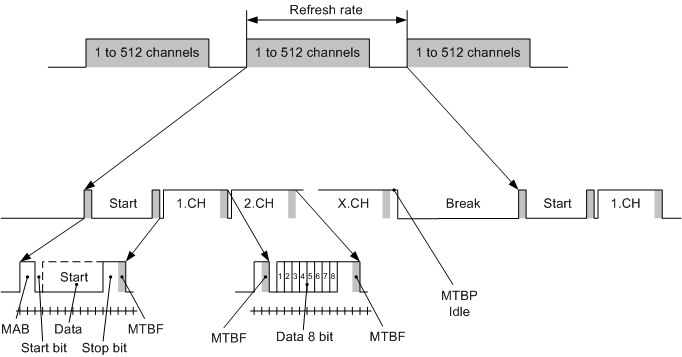

DMX Timing
This is a description of the DMX512 standard in short.
This standard is building on a line interface named RS-485 and it is a standard IC with almost al digital IC manufacture.
DMX512 sends packages of up to 512 frames with 8 bit data to fixtures.
Normally only the used addresses are send which means if only up to address 10 are used, only 10 frames are send.
The max number of frame that can be send is 512. (Start frame + 511)
Start Frame or Address 0 is a sync frame that can't be addressed on the fixtures.
The packet don’t contain address information but the address is the frame position in the packet and therefore all frames up to the last frame are to be send each time.
To synchronize all receivers to the transmitter, a “Break” and a mark after break “MAB” is send.
Each receiver will from this “MAB” point, count frames and wait for the ones addressed to them.
Each frame ends with 2 high stop bits and the next frame starts with one low start bit.
The first frame (Address 0) will contain the start code and in normal operating mode it will be “0x00”.
The data are clocked out with 250 KHz and his gives a bit time of 4uS.

Starting from the end of the last packets stop bits the state will be idle mode.
Idle mode or MARK TIME BETWEEN PACKETS ,”MTBP” is the time between the packages where the signal is high. This time can be from 0 to 1 sec.
Then a Break is send as a start on the packet.
The Break are minimum 2 frames long. Corresponding to 22 bits.
And then comes a MARK AFTER BREAK, “MAB” which are 2 bit long.
Then the frames comes one by one and the first frame (frame 0) is a start code that tells what is in this packet.
If it is a normal fixture control packet then it will be 0x00 as start code and in the next frames will be a control value from 0 to 255.
Frame.
The frame consists of a start bit which is always low. This makes the a high low transition to indicate the start of the frame.
Then 8 bits are send.
And finally are 2 stop bits, that are high, send.
This gives a total of 11 bits per frame.
The frame can be hold high after the stop bit. This time is the MARK TIME BETWEEN FRAME, “MTBF”. This time can be from 0 to 1 sec.
When the last Frame has been send the transmitter goes into high, Idle state again.
{kind=link}

nd = not defined.
A full packet containing 512 frames (Start Frame + 511) will then be 22, mS
Break + MAB + (Start Frame + MTBF) + 511*(Frames + MTBF) + MTBP idle
The shortest full pack will then be
88 + 8 + (44 + 0) + 511*(44 + 0) + 0 = 22624 uS or 22,624 mS.
This is running with the absolute min values and MTBF and MTBP Idle set to 0.
However times like Break and MTBP can with good sense be prolonged and at the end give a more stable system.
MTBP Idle is normally used to adjust the refresh rate.
Note:
Sometimes words like DMX 1024 and DMX 128 pops up.
DMX 1024 means that there are 2 universes, DMX512, running in parallel.
DMX 128 means that only up to 128 channel are send. (Start Frame + 127)
On the fixture side this means nothing they all run DMX512 and in the DMX1024 system there will be 2 physical connection available each running DMX512.
The DMX128 means that in practice only addresses up to 127 can be used because address 0 is the start sync and it is not a legal address on the fixture.